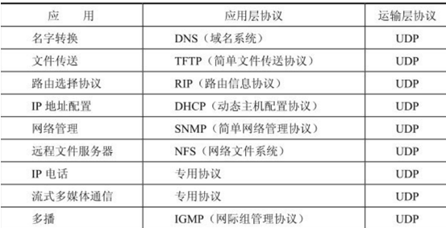
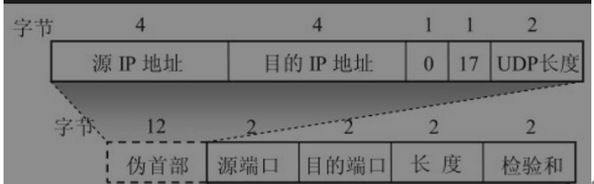
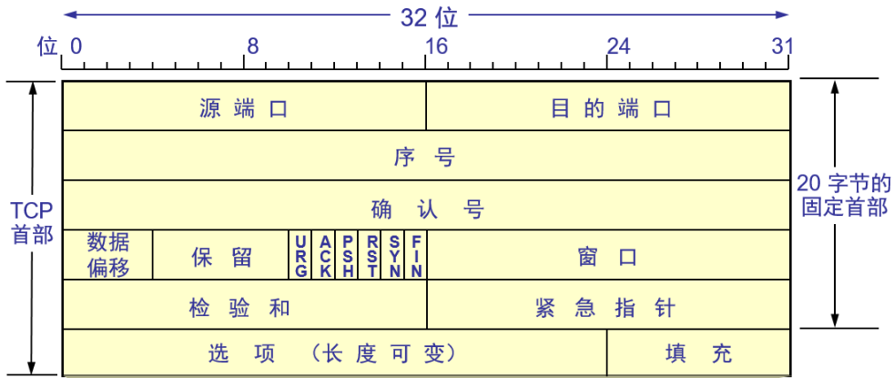
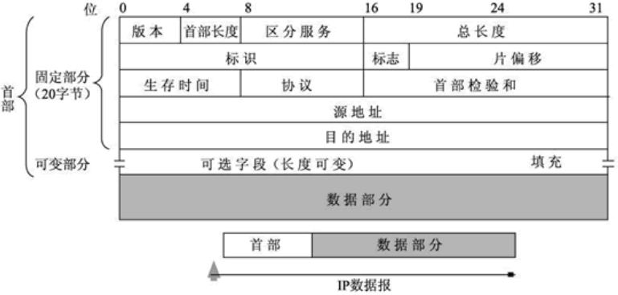

计算机网络学习小结
TCP/IP五层网络自顶向下分别为应用层、传输层、网络层、数据链路层、物理层，也可分为四层（数据链路层与物理层合并为网络接口层）
各层用到的协议：
应用层
传输层
传输层提供两个主机进程间数据传输服务，主要有TCP和UDP两种协议
传输层提供的服务有：
- 数据传输。
- 错误检查。
- 可靠数据传输。数据的正确性和有序性。
- 拥塞控制。
传输层工作机制
- 发送数据的过程：
- 客户端进程组装应用层报文
- 进程根据传输层协议，创建相应的 Socket。
- 进程将应用层消息传给 Socket。
- Socket 将应用层报文（Message）分成多份，加上传输层报文头。封装成传输层报文段（Segment）传递给网络层。 - 接收数据的过程：
- 网络层将组装好的报文段传给传输层。
- 传输层接收到报文段，根据报文段的头部信息中的目标端口，将报文段传给指定的 Socket。
- Socket 收集到所有的报文段后，将报文段转换为应用层报文。
- 进程读取 Socket 中的应用层报文。
UDP协议（User Datagram Protocol）
- UDP运用场景： 
- UDP报文段结构：  相比TCP的首部20字节，UDP只有8字节
- UDP和IP数据报的区别：
UDP计算检验和的方法和计算IP数据报首部检验和的方法相似。但不同的是：IP数据报的检验和只检验IP数据报的首部，但UDP的检验和是把首部和数据部分一起都检验。
TCP协议（Transmission Control Protocol）
- TCP运用场景： ![[Pasted image 20230922224135.png]]
- TCP 协议有以下特点：
- 可靠的数据传输
- 面向连接 - TCP报文段结构： 
- TCP的连接机制（三次握手）：
第一次握手（SYN）：
- 客户端向服务器发送一个TCP数据包，其中包含了一个SYN（同步）标志位和一个随机生成的初始序列号（ISN）。这表明客户端希望建立连接。
第二次握手（SYN-ACK）：
- 服务器收到客户端的SYN请求后，如果同意建立连接，会回应一个TCP数据包，其中包含SYN和ACK（确认）标志位。服务器也会生成一个随机的初始序列号，并将客户端的初始序列号加一，作为确认号。这表明服务器愿意建立连接，并且确认了客户端的请求。
第三次握手（ACK）：
- 客户端接收到服务器的响应后，会发送一个包含ACK标志位的TCP数据包，表示对服务器的确认。客户端的序列号也会加一，并且确认号设置为服务器的初始序列号加一。这样，双方的连接就建立起来了。 - TCP断开连接机制（四次挥手）：
第一次挥手（FIN，客户端发送）：
- 客户端向服务器发送一个TCP数据包，其中包含FIN（结束）标志位，表示客户端不再发送数据，但仍然愿意接收数据。客户端希望关闭输出流，但保持输入流打开，以确保服务器仍可以向客户端发送数据。
第二次挥手（ACK，服务器发送）：
- 服务器接收到客户端的FIN后，会发送一个TCP数据包，其中包含一个ACK标志位，以确认收到客户端的关闭请求。此时，服务器仍然可以向客户端发送数据。
第三次挥手（FIN，服务器发送）：
- 当服务器准备好关闭输出流时，它会向客户端发送一个TCP数据包，其中包含FIN标志位，表示服务器不再发送数据。这个步骤通知客户端服务器已经完成了数据传输。
第四次挥手（ACK，客户端发送）：
- 客户端接收到服务器的FIN后，会发送一个TCP数据包，其中包含ACK标志位，以确认收到服务器的关闭请求。此时，客户端和服务器都完成了关闭操作，连接被完全关闭。 - 挥手会出现的问题：
- 可靠数据传输的条件：
- 无数据缺失
- 无数据错误
- 无数据重复
- 数据传输顺序正确 - TCP如何控制流量：
TCP流控制是一种用于调整TCP连接中数据的传输速率的机制，以确保发送方不会过快地向接收方发送数据，从而防止网络拥塞和数据丢失。TCP流控制使用滑动窗口机制来实现，该窗口大小根据接收方的能力来动态调整。
- 滑动窗口机制
TCP连接的每一端都会维护一个接收窗口（Receive Window）的大小。这个窗口表示了接收方可以接受的未确认数据的最大数量。发送方必须确保发送的数据不会超过接收窗口的大小。
- 接收方通知滑动窗口的大小
接收方会周期性地通告其当前接收窗口的大小给发送方。这个信息包含在TCP报文的窗口字段中。接收方可以根据其可用的缓冲区空间来调整窗口大小。
- 发送方控制发送速率
发送方根据接收方通告的窗口大小来控制发送速率。发送方会发送数据，但不会发送超过窗口大小的数据量。如果窗口变小，发送方会减慢发送速率以避免发送过多数据。
- 动态调整窗口大小
接收方可以根据其缓冲区的可用空间来动态调整窗口大小。如果接收方的缓冲区充足，窗口可以增大，允许更多数据的传输。如果缓冲区即将满了，窗口可以减小，以避免数据的溢出和丢失。 - 拥塞控制：
拥塞控制是TCP协议中的一项关键机制，用于监测网络中的拥塞情况并采取措施来避免或减轻拥塞。拥塞控制的主要目标是防止过多的数据包在网络中造成丢失，从而维持网络的稳定性和性能。
网络层(Network Layer)
网络层提供两个主机之间进行通讯的服务，它是通过主机绑定的，一个主机在网络中通过IP地址进行标识，同一个主机可能有多个IP，一个IP只能绑定唯一的主机。
几个概念
- IP：IP地址就是给因特网上的每一个主机（或路由器）的每一个接口（网卡）分配一个在全世界范围内唯一的32位的标识符。IP地址并不仅仅指明一个主机，而是还指明了主机所连接到的网络。
IP地址的种类：
![[Pasted image 20230922225228.png]]
ABC类为常用的IP地址，其中A类主要分配给政府机关使用，B类地址主要给大中型企业使用，C类地址主要给个人使用。这三种是主要的。
A类范围：1.0.0.1—126.155.255.254
B类范围：128.0.0.1—191.255.255.254
C类范围：192.0.0.1—223.255.255.254
D类范围（主要用于多播通信）：224.0.0.1—239.255.255.254 - IP数据报格式：
- 网络层包含的协议：
- IP协议（Internet Protocol，因特网互联协议）;
- ICMP协议（Internet Control Message Protocol，因特网控制报文协议）;
- ARP协议（Address Resolution Protocol，地址解析协议）;
- RARP协议（Reverse Address Resolution Protocol，逆地址解析协议）。 - 路由原理：主机将IP数据报发送给路由器，路由器计算选择下一个能到达目标主机的路由器。若无法计算出下一个路由器，则发送给缺省网关进行查询发送。
数据链路层
物理层
本博客所有文章除特别声明外，均采用 CC BY-NC-SA 4.0 许可协议。转载请注明来自 Martin's Blog！
评论
ValineDisqus